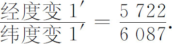
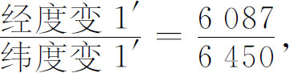
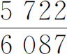

2．几何本身
15，16世纪除透视法外，几何学的发展没有给人深刻的印象。丢勒、达·芬奇和帕乔利（Luca Pacioli，约1445—约1514）（他是一个意大利的修士，弗兰西斯卡的学生，达·芬奇的朋友和教师）讨论的一个几何题目是作圆的内接正多边形。这些人试图按阿拉伯人阿布尔韦法曾考虑过的限制用直尺和开口固定的圆规来完成作图，但他们只是给出了近似的方法。
画正五边形是一个很受注意的问题，因为它是在筑城设计中提出来的。在《原本》四卷命题11中欧几里得曾经给出一个画法，但是没有限制用开口固定的圆规，塔尔塔利亚、费拉里（Lodovico Ferrari）、卡丹、蒙特、贝内代蒂和另外很多16世纪的数学家探讨了按照这种限制给出一个精确画法的问题。后来贝内代蒂扩大了这个问题，寻找用直尺和开口固定的圆规来解欧几里得的所有作图问题。一般的问题是由丹麦人莫尔（George Mohr，1640—1697）在他的《奇妙的欧氏纲要》（Compendium Euclidis Curiosi，1673）一书中解决的。
莫尔在他的丹麦文《欧几里得》（Euclides Danicus，1672）一书中还指出，凡能用直尺和圆规作的图也可以只用一个圆规来完成。当然，没有直尺就不能画出连接两点的直线，但是给定了这两点就可以画出这直线和圆的交点，并且给定了两对点就可以画出由两对点所决定的两条直线的交点。马斯凯罗尼（Lorenzo Mascheroni，1750—1800）重新发现只用一个圆规就足以完成欧几里得作图这一事实并且发表在他的《圆周几何》（La geometria del compasso，1797）一书中。
求物体的重心是希腊人另一个感兴趣的问题。这问题到文艺复兴时期又被几何学家们提出来了。例如，达·芬奇对求等腰梯形的重心给出了一个正确的方法和一个不正确的方法。然后他不加证明地给出了四面体的重心的位置，就是，重心在底面三角形的重心到对顶点的连线上四分之一的地方。
两个新颖的几何思想出现在丢勒的一些次要的著作里。第一个是空间曲线。他从空间螺旋线出发，并考虑这些曲线在平面上的投影。投影是各种各样的平面螺旋线，丢勒指出如何去画它们。他还介绍了外摆线，这是一个动圆在一个定圆外滚动时动圆上一点的轨迹。第二个思想是考虑曲线和人影在两个或三个相互垂直的平面上的正交投影。这个想法丢勒只是接触了一下，后来到18世纪时由蒙日（Gaspard Monge）发展为画法几何。
达·芬奇、弗兰西斯卡、帕乔利和丢勒在纯粹几何方面的工作从其有无新结果的观点来看的确是不重要的。它的主要价值是广泛地传播了某些几何知识，这些知识用希腊标准看来是粗浅的。丢勒的《圆规直尺测量法》的第四部分与弗兰西斯卡的《论规则形体》（De Corporibus Regularibus，1487）和帕乔利的《神妙的比例》（De Divina Proportione，1509）一起，重新引起人们对立体几何学（立体形的量法）的兴趣。立体几何学在开普勒时代繁荣起来。
另一个几何的活动是制作地图，它刺激了进一步研究几何。地形勘察揭露出现有地图的不妥当，同时揭开了新的地理知识。地图的制作和印刷开始于15世纪后半叶，以安特卫普和阿姆斯特丹为中心。
制作地图的问题是从下述事实提出来的：一个球不能裂开展平而不畸变。还有，方向（角）或面积，或两者都会发生畸变。制作地图的最有意义的新方法是克雷默（Gerhard Kremer）提出的，他也叫墨卡托（Mercator，1512—1594），他把终身贡献给这门科学。1569年他作出了一幅地图，用了著名的墨卡托投影。在这张图上纬线和经线是直线。经线是等距离的，但是纬线的间隔是递增的。递增的目的是去保持经度1′和纬度1′的长的比值。在地球上纬度1′的变化等于6087英尺；而经度1′的变化仅在赤道上是6087英尺。例如，在纬度20°时，经度改变1′是5722英尺，得到比值

墨卡托的直线地图上经线是等距离的，每一分的变化是6087英尺。为了保持上面那个实际上的比值，当纬度L递增时他令纬线间的距离按倍数1/cos L递增。他的地图上，在纬度20°的地方纬度每变化1′，纬线的距离是6087（1/cos 20°），也就是6450英尺。这样在纬度20°处

而这个比值和实际上的比值

相等。墨卡托地图有几个优点。只是在这种投影之下地图上相互两点的罗盘方位才是正确的。于是球面上罗盘方位是常数的线（即所谓斜驶线，它与子午线有相同的交角）成为地图上的一条直线。距离和面积不保持；事实上，在两极的周围地图畸变得很厉害。但是，因为方向是保持的，所以在一点处的两个方向之间的夹角是保持的，从而这个地图被称为是保形的。
虽然16世纪制作地图的工作中没有出现很多新的数学思想，但是后来这个问题被数学家们接了过去，并引导出微分几何中的工作。